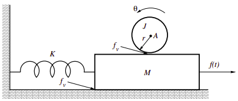
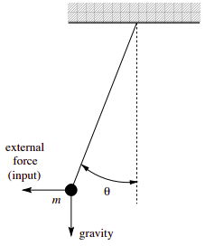

Physical system modeling#
Problem 1: flyball speed governor#
Problem 2: ball on mass#
An inertia \(J\) of radius \(r\) attached to a fixed axis of rotation \(A\) as shown on the next page. The inertia is in contact with a mass \(M\) attached via a spring of stiffness \(K\) to a fixed wall. The inertia-mass contact is subject to viscous friction of coefficient \(f_v\). The motion of the mass with respect to the horizontal floor is subject to the same viscous friction coefficient \(f_v\). The system input is a horizontal force \(f(t)\) on the mass \(M\) and the output is the rotation \(\theta(t)\) of the inertia.

Problem 3: swinging pendulum#
A pendulum consisting of a mass \(m\) attached to a rigid mass-less rod as shown below. The system input is a horizontal external force and the output is the angle \(\theta\).
